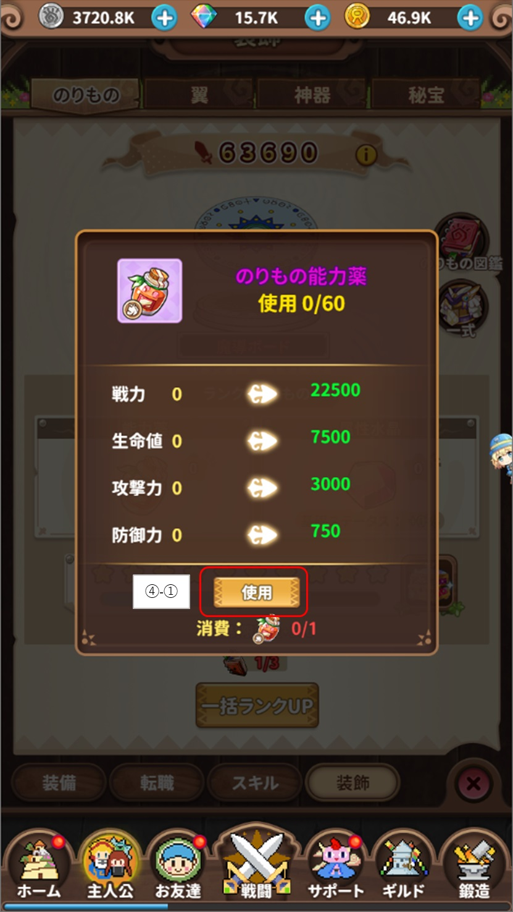

主人公
主にプレイヤー自身の強化をすることが出来ます。
大きく分けて『装備』『転職』『スキル』『装飾』の4つに別れています。
『装備』は武器、防具、攻撃力等を上げることが可能です。
『転職』はゲームスタート時に決めた職業のランクをミッションをクリアする事でランクアップできます。
『スキル』は見たまんま、スキルレベルを任意であげることができます。
『装飾』は『のりもの』『翼』『神器』『秘宝』を設定することができ、
見た目を変更できますがそれぞれでスキルが異なります。
・装備
①はプレイヤーが装備できる武器や防具です。
②はランクマスターを上げることが出来ます。
③は主人公のステータスを見る事が可能です。
④は修行が行えます。
・附魔
①で示した武器や防具のいずれかを選択すると左側の画面が表示されます。
武器、防具を『カン』『巻物』を使用してそれぞれのランクをあげる事ができます。
武器、防具は鍛造をする事でレアリティがあがりますが、
『カン』『巻物』を使ってあげたランクは引き継がれるので、
『巻物』が手に入ったら使用してランクをあげると良いです。
１．①-①の『附魔』を押下します。
２．右側の画面が表示されるので①-②の『附魔』を押下すると武器防具のステータスが上がります。
・ランクマスター
②の箇所を選択すると左の画面が表示されます。
武器、防具を対象にした達成条件があります。
上記画像であれば、『全身装備が橙色ランクになる』とあるので、
全身装備が橙色になると②-①の『Lv.UP』が選択できるようになります。
見て分かる様に主人公の戦力、その他の能力が付与されます。
・主人公ステータス
③の箇所を選択すると左の画面が表示されます。
現在の主人公のステータス情報が確認できます。
・修行

④の箇所を選択すると左の画面が表示されます。
『修行突破石』『修行石』を使用することで主人公のステータスを事ができます。
１．④-①の箇所を選択すると右の画面が表示されます。
２．『修行突破石』を使って④-③を選択すると、『生命、攻撃、防御、速度の力』のランクを上げる事ができます。
３．『修行石』を使って④-②を選択すると主人公の修行レベルを上げる事ができます。
※修行レベルをあげると主人公のステータスがあがります。
・転職
ゲームスタート時に決めた職業を任務を達成することで上げることができます。
転職をすることで『転職報酬』や新規にスキルが獲得できます。
１．①の箇所を選択すると右の画面が表示されます。
現在の転職位置は赤いグルグルの旗のところになります。
２．②の箇所では任務が表示されているので達成を目指します。
３．②の任務を達成すると③を選択して次へ進むことができます。
・スキル
①はプレイヤーのスキル一覧です。転職するとスキル数が増えます。
②はスキルの発動優先順位を変えることができます。
③は『主人公のスキル書』を使って自動配分でスキルのレベルをあげてくれます。
④はリンを消費することでスキルレベルを初期化することができます。
『主人公のスキル書』は戻ってくるのでスキルの再振り分け時に使いましょう。
・スキル★UP
①で囲ったスキルのアイコンを選択するとスキルの詳細が表示されます。
①-①は『3★』ですが『星UP』するためには、転職をしないと『星UP』ができません。
①-②は『1★』で『主人公スキル書』を使用して『星UP』を選択すると『2★』になります。
・スキルの優先順位
全てのスキルは表示されていません。
②を選択するとスキルの発動順番を変える画面がでます。
②-①の『上へ』を選択するとスキルを上に上げることが出来ます。
※恐らく上から優先度が高い？
②-②の『自動設定』を選択すると自動的に優先度が決められて設定されます。
・スキル書
③を選択すると『スキル』の自動分配するダイアログがでます。
③-①を選択すると『取消』
③-②を選択すると『主人公のスキル書』を使って自動分配されてスキルレベルがあがります。
・スキルリセット
④を選択すると『スキルレベル』をリセットするダイアログがでます。
④-①を選択すると『キャンセル』
④-②を選択すると『リン』を使ってスキルがリセットされ使用した『主人公のスキル書』が返却されます。
・装飾
武器、防具とは別に主人公に装備できるものです。
『のりもの、翼、神器、秘宝』の4つを装備することができます。
初期装備はそれぞれ次の通りです。
のりもの＝メケメケ、翼＝戦闘用の祭壇、神器＝勇者の旗、秘宝＝呪われた村長像
それぞれ画像を用意しましたがどれも同じ方法で装備、強化できるので置きかえてください。
・ステータス

①を選択するとステータスの確認が出来ます。
・図鑑&★UP
②を選択すると現在装備している装飾が表示されます。
②-①を選択すると装備している装飾のスキル効果が見れます。
②-④の中から解禁されている装飾を選択して②-②を選択すると装備できます。
※『装備取消』を押下すると初期装備になります。
装飾の欠片を持っている場合は、②-③を選択することで『★UP』することができます。
※欠片は、神の遺跡、欠片争奪戦等で手に入ります。
・一式
③を選択すると『一式』の確認が出来ます。
※一式の中の『のりもの、翼、神器、秘宝』の2～4個を解禁すると戦力が上昇します。
・能力薬
④を選択すると『能力薬』を使用して④-①を選択すると装飾の能力をあげることができます。
・水晶
⑤を選択すると『水晶』を使用して⑤-①を選択すると装飾の属性水晶値をあげることができます。
・星UP報酬
⑥を選択すると装飾の『星UP報酬』が獲得できます。
※手に入るのは星UPした装飾の強化書です。
⑦を選択すると『強化書』を使って装飾の『星UP』をすることができます。
※星ランクは装備するものを変えても続きから『星UP』できます。
Use Tools
魔法陣グルグル ほしくず大冒険のプレイは『コチラ』からどうぞ